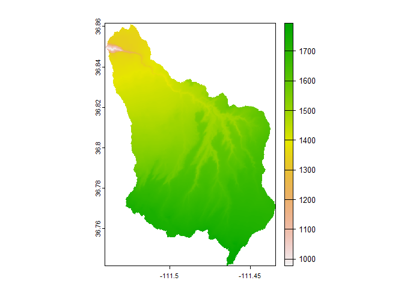
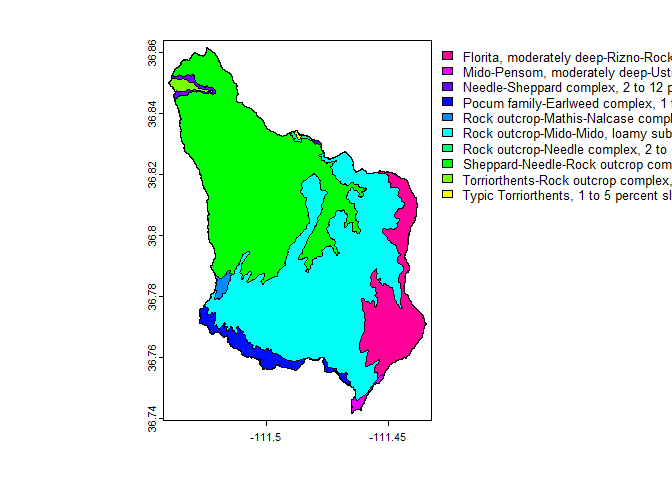

The goal of desertHydro is to create a spatially distributed hydrological model built with R tools! Many spatially distributed hydrological tools exist, but the purpose of this one is to provide the space for those familiar with R to build and create their own models. The integration of many outstanding packages within the R community makes this possible. This package serves to utilize free and/or readily available hydrological data to improve the hydrological understanding of these arid regions.
Abstract
Quantifying hydrologic response of arid region watersheds to convective storms is poorly constrained and needs to be addressed with implications for agriculture, land management, and hazard assessment. Modeling of arid and semi-arid watershed hydrology presents many challenges, including dynamic infiltration, widely distributed storm cells both spatially and temporally, and steep slopes. Novel techniques and remotely sensed data are necessary to model arid watersheds.
The example below is the Waterhole’s watershed located in northern Arizona and is representative of the challenges that face arid watersheds. This package seeks to create a physically based, spatially distributed hydrology model to evaluate watershed hydrology under different land cover and climate scenarios in arid regions. The flow model desertHydro is built using R software and CRAN packages with widely used packages such as whitebox and terra. The desertHydro package facilitates the creation and modification hydrological simulations with GIS applications. The paper compares the effects that different rainfall inputs have on the discharge within the watershed. The purpose of this model is to create spatially distributed rainfall-runoff results for a watershed with repeatable results. Future improvements to surface water flow calculations and infiltration will increase the effectiveness of the model.
Installation
You can install the development version of desertHydro from GitHub with:
# install.packages("devtools")
devtools::install_github("maxwell-miller-geo/desertHydro")Expected Workflow
library(desertHydro)
library(terra)
#> terra 1.7.71
# library(whitebox)The set-up for desertHydro is to separate the whole process into two folders.
1 Watershed Elements
# Using the example directory within the package
WatershedElements <-
dirname(system.file("extdata", "dem.tif", package = "desertHydro")) Some elements present within the demo within the package.
list.files(WatershedElements)
#> [1] "boundary.cpg" "boundary.dbf"
#> [3] "boundary.prj" "boundary.qmd"
#> [5] "boundary.shp" "boundary.shx"
#> [7] "breach-test.tif" "dem.tif"
#> [9] "dem.tif.aux.xml" "example_discharge.csv"
#> [11] "geo_adjustments.xlsx" "geo_soils.cpg"
#> [13] "geo_soils.dbf" "geo_soils.prj"
#> [15] "geo_soils.shp" "geo_soils.shx"
#> [17] "LandCoverCharacteristics_Soils.xlsx" "main-stem.dbf"
#> [19] "main-stem.shp" "main_stem.tif"
#> [21] "mini_ws.cpg" "mini_ws.dbf"
#> [23] "mini_ws.prj" "mini_ws.shp"
#> [25] "mini_ws.shx" "mod_dem.tif"
#> [27] "model_landcover.tif.aux.xml" "observable-discharge.csv"
#> [29] "rain-data-day-2022.csv" "smooth_dem.tif"
#> [31] "soils.cpg" "soils.dbf"
#> [33] "soils.prj" "soils.shp"
#> [35] "soils.shx" "stream_analysis.dbf"
#> [37] "stream_analysis.prj" "stream_analysis.shp"
#> [39] "stream_analysis.shx" "stream_path.cpg"
#> [41] "stream_path.dbf" "stream_path.prj"
#> [43] "stream_path.qmd" "stream_path.shp"
#> [45] "stream_path.shx" "test-boundary.cpg"
#> [47] "test-boundary.dbf" "test-boundary.prj"
#> [49] "test-boundary.qmd" "test-boundary.shp"
#> [51] "test-boundary.shx" "USGS_Rain_2001_2021.xlsx"
#> [53] "USGS_Rain_2022.xlsx" "voronoi.cpg"
#> [55] "voronoi.dbf" "voronoi.prj"
#> [57] "voronoi.shp" "voronoi.shx"
#> [59] "waterholes_extent.tif" "waterholes_shape.dbf"
#> [61] "waterholes_shape.prj" "waterholes_shape.shp"
#> [63] "waterholes_shape.shx" "watershed_stack.tif.aux.xml"The watershed elements folder will contain all of the necessary information about a given watershed.
For example,
# Examples for models
demFile <- "dem.tif" # name of digital elevation model
dem <- terra::rast(file.path(WatershedElements, demFile))
terra::plot(dem) Other types of data, Soil from Web Soil Survey

Handling rainfall data
rainfall <- file.path(WatershedElements, "USGS_Rain_2022.xlsx")
gauges_list <- readxl::read_xlsx(rainfall) # contains multiple spreadsheets
tail(gauges_list)
#> # A tibble: 6 × 4
#> Gage Longitude Latitude `Start date`
#> <chr> <dbl> <dbl> <dbl>
#> 1 TAN-G -112. 36.7 NA
#> 2 TATER-1 -112. 36.5 NA
#> 3 TATER-2 -112. 36.5 NA
#> 4 WATER-1 -111. 36.8 NA
#> 5 WATER-2 -111. 36.8 NA
#> 6 WATER-G -112. 36.8 NAFilter rainfall
# Rainfall file - "USGS_Rain_2022.xlsx" is stored in Watershed Elements
# Select days of rainfall for spreadsheet with year "2022"
rain <- suppressWarnings(
desertHydro::rainfallTotalRain(WatershedElements,
date = "2022",
level = "day")
)
# Suppress warnings to ignore dirty data
tail(rain)
#> Time_day WATER-1 WATER-2 WATER-G Total_in
#> 80 2022-06-17 0 0 0.04 0.04
#> 81 2022-06-18 0 0 0.06 0.06
#> 82 2022-06-19 0 0 0.02 0.02
#> 83 2022-06-26 0 0 0.02 0.02
#> 84 2022-07-11 0 0 0.01 0.01
#> 85 2022-07-23 0 0 0.05 0.05